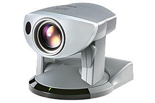
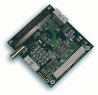

Camera¶
Cacic has a PTZ Camera, Canon VC C50i
Main Especs¶
- Resolution: 640x480
- Zoom: up to 26x optical
- Pan/Tilt range: 200-degree pan range, 120-degree tilt range
- Pan/Tilt speed: up to 90-degrees Pan and 70-degrees Tilt per second
- Format: NTSC
- Power Supply: 13 VDC
- Stream Interface: RCA-BNC Cable
- Control Interface: Custom multiconnector with terminals S-VIDEO OUT, RS232 OUT and RS232 IN
- Framegrabber: Sensoray 311
Note
There is wireless controller that came with camera, it work but is not used.
Linux Drivers¶
For the Camera¶
The cameras’s stream can be retrived with OpenCV using Video4Linux. Checkout this code.
Framegrabber¶
Sensoray 311 with interface PC104+, manufactured by Sensoray
- Linux 2.4.x Driver
- Use built in ‘bttv’ module with parameter: card=73
- Linux 2.6.x Driver
- Use v4l with parameter: card=73
Troublehooting¶
Blue or black screen when retriving frame using OpenCV¶
- Check the camera’s LED
The camera is switched off, start P2OS to switch the camera on.
- Check the power
If the LED is off, maybe the power to the camera is switched off. Press the AUX 1 and AUX 2 buttons on the robot’s panel.
Blue or black screen when retriving frame using another software¶
Same for OpenCV, check the section above.
Scramble image¶
- Switch v4l to retrieve the input with NTSC format
Open the terminal and try
$ v4l2-ctl -s ntsc
- Using gscam and ROS?
Set enviroment variable GSCAM_CONFIG=”v4l2src ! video/x-raw-yuv, width=320, height=240 ! ffmpegcolorspace”